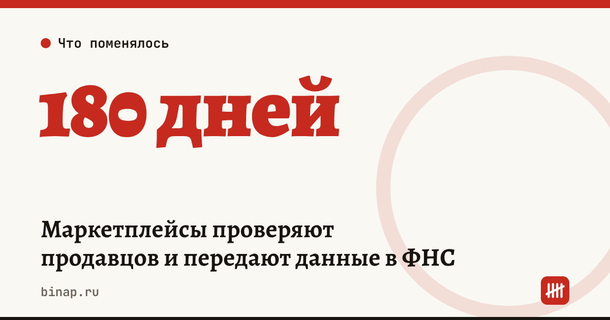

Маркетплейсы проверяют продавцов и передают данные в ФНС

С 1 октября 2026 года маркетплейс должен проверить продавца до того, как заключит с ним договор. Правила утвердило правительство (постановление от 20.06.2026 № 768).
Что проверяют. Достоверность названия, адреса, ИНН, ОГРН и КПП компании. Для ИП и самозанятых — свои наборы сведений. Способ проверки площадка выбирает сама, для российских компаний и ИП это может быть вход через Госуслуги (ЕСИА).
Сроки. Через Госуслуги проверка занимает один календарный день с момента, как площадка получила ваши данные. Результат приходит в течение рабочего дня. Если отказали, площадка обязана назвать причину, а проверку можно пройти повторно.
Действующие продавцы. По данным Клерка, на их перепроверку площадкам дали 180 дней.
Обмен данными с ФНС (постановление от 20.06.2026 № 766). Только если вы дали согласие, площадка отправляет в налоговую: - сведения о договоре с вами: дату, номер, сроки, предмет; - сведения о вас, в том числе согласны ли вы на снижение цены за свой счёт; - акт сверки взаиморасчётов.
Отправить их нужно в течение 2 рабочих дней после согласия, изменения — в течение 3 рабочих дней.
Что сделать селлеру: 1. Откройте выписку из ЕГРИП или ЕГРЮЛ и сравните название, ИНН, ОГРН и адрес с данными в кабинете маркетплейса. Расхождение лучше исправить до проверки. 2. Проверьте, что вход на Госуслуги работает и учётная запись подтверждена. 3. Когда площадка попросит согласие на передачу данных в ФНС, прочитайте, что именно уйдёт в налоговую. Это обычные данные о договоре и сверке, но решение ваше.
Как ещё меняются отношения с маркетплейсами — в разборе «Закон о платформах с 1 октября».